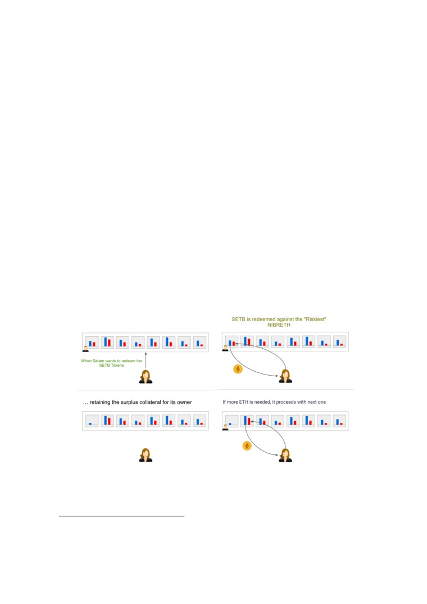
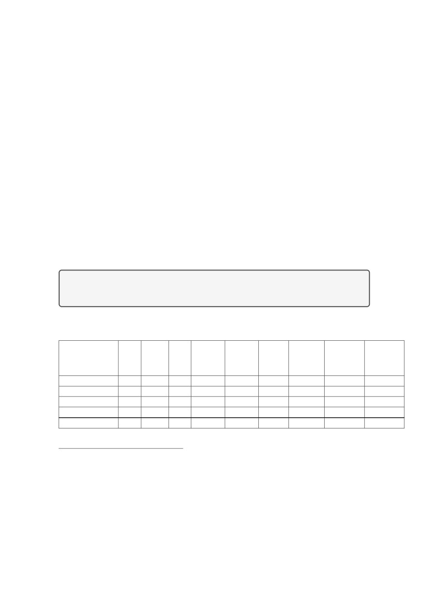
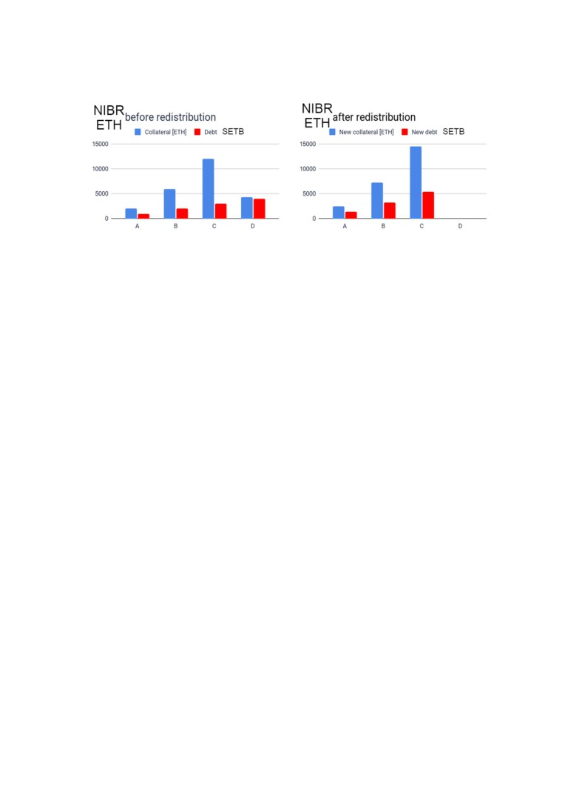
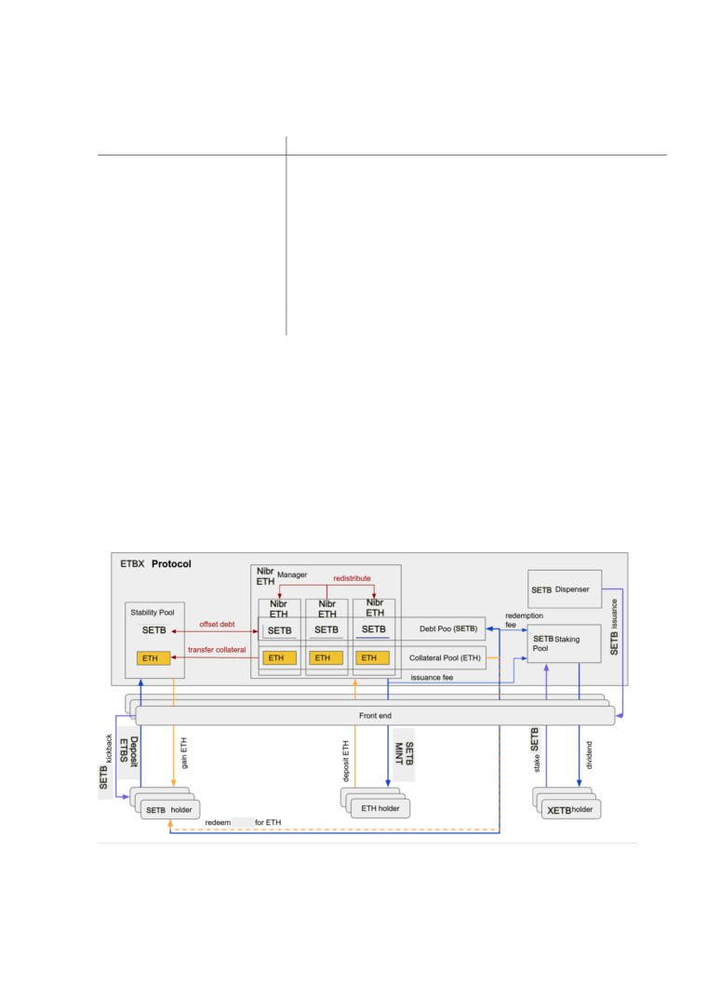

ETBX Protocol: Decentralized Financing Protocol
Yoseph Wondafrash
Version.0.1∗†
June 15, 2021
Abstract
The ETBX protocol is a decentralized protocol that allows Ethereum holders to maximize collateral
liquidity without paying interest. Once ETH is secured as collateral for a smart contract and a unique
position called “NIBRETH” is created, users can immediately liquidate via Minting SETB, the fixed
ETB ledger. Each NIBRETH must be guaranteed at least 110%. Each SETB holder can exchange
the fixed currency for its original collateral at any time. Algorithmically coordinated reimbursement
mechanism provides a stable minimum 1Bir (Ethiopian BIR).
This is an unrivaled filtering mechanism based on Catalyst Stable deposits and the riskier and safer
NIBRETH inventory redistribution cycle. Current sustainability systems are used through interaction
and compromise with economic users rather than active governance or financial intervention. The
protocol includes internal incentives leading to early adoption and multifaceted implementation to
promote decentralization.
∗Note that the ETBX Protocol is not affiliated with the government of Ethiopia.
†Note NIBRETH is the compound of the Amharic word NIBRET (Meaning: Possession), And ETH for Ether
1
Contents
1
Introduction and Other Competitive Services
2
1.1
Stablecoins and collateralized debt platforms
2
1.2
Shortcomings of collateralized debt platforms
2
2
Key benefits of the ETBX Protocol protocol
3
2.1
Interest-free liquidity
3
2.2
Low collateral ratio (110%)
3
2.3
Hard price floor
4
2.4
Governance-free algorithmic monetary policy
4
2.5
Censorship resistance
4
2.6
Growth and early adopter incentives
4
3
System functionality
5
3.1
Borrower operations
5
3.2
Stability Pool operations
6
3.3
Redemption mechanism
6
4
NIBRETH liquidation mechanism
7
4.1
Offset undercollateralized NIBRETHs against the Stability Pool
8
4.2
Redistribute undercollateralized NIBRETHs to other borrowers
9
5
Restoration mode
10
6
Conclusion
11
1
Introduction and Other Competitive Services
1.1
Stablecoins and collateralized debt platforms
Cryptocurrencies such as Bitcoin, Ethereum, Stablecoin, and secure lending operating systems are
more volatile than traditional asset classes such as stocks and bonds. However, many people use
crypto to invest, pay, trade.
Fiat-lined coins such as Tether, USDC, and TrueUSD are viable but target alternatives to volatile
signals. In addition, stablecoins that support cryptocurrencies are gaining popularity and are one of
the main engines of the decentralized finance movement (DeFi). Secure lending operating systems
MakerDAO, Equilibrium and Synthetix allow holders to create variable signals for new pegged cur-
rencies. This allows the owner to secure some of the economic value of the token while the token is
fully invested. Additionally, token holders can leverage the resulting liquidity to provide additional
collateral to increase liquidity.
1.2
Shortcomings of collateralized debt platforms
Collateralized debt platforms do not rely on lenders to provide liquidity as they can mint the stable-
coins themselves. With no refinancing costs, such systems can generate liquidity for free. Yet, most
platforms charge recurring fees for borrowing (as high as 20.5% p.a1) which accumulate over time.
The variable fees (stability fees) are meant to regulate coin supply in order to maintain the peg of
the issued stablecoin, and correspond to an interest rate in traditional banking. Affecting new and
existing loans alike, interest rates only have an indirect impact on monetary supply and are rather
ineffective in the short term. While existing borrowers may not have the means to repay their loans
as an immediate reaction to rising interest, short-term speculators and leverage seekers might not be
greatly affected by interest rates in the first place.
Often times, governance token holders are expected to manage the economic parameters of their
systems (e.g. set the fee rate) in the best interest of the protocol. In practice, on-chain governance
1Stability fee charged by MakerDAO
2
has been a difficult and heavily debated topic, with notoriously low turnouts, potentially misaligned
incentives, and a high concentration of power in the hands of a few.
In addition to charging stability fees, existing platforms typically require the individual bor-
rower’s position to be significantly overcollateralized. This makes the positions capital inefficient
since borrowers tend to maintain much higher collateral ratios in practice than the minimum. Exist-
ing platforms require overcollateralization due to the liquidation mechanisms they apply to positions
that become undercollateralized. Both collateral auctions and fixed-price selloffs have turned out to
be inefficient by design, leaving room for improvement.
Finally, crypto-backed stablecoins are not generally redeemable at face value and cannot guaran-
tee a hard price peg due to the lack of direct arbitrage cycles. There is no issuance or redemption
mechanism that would enable arbitrageurs to make guaranteed profits by buying freshly minted sta-
blecoins or selling them back to the protocol whenever the price deviates from the peg. Instead, the
systems rely on a less effective soft peg mechanism, which stabilizes the exchange rate by making
the loans more or less attractive through variable fees. Crypto-backed stablecoins are thus usually
subject to higher price volatility than fiat-backed stablecoins.
To summarize, existing collateralized debt platforms have the following downsides:
• High and unpredictable interest fees for borrowers
• Problematic governance mechanisms
• Necessarily high collateral ratios, due to inefficient liquidation processes
• No direct redemption mechanism to ensure price stability
2
Key benefits of the ETBX Protocol protocol
A better system is possible. ETBX Protocol improves upon the mentioned issues by offering the
following key benefits:
• Interest-free liquidity
• Low collateral ratio (110%)
• Hard price floor
• Governance-free algorithmic monetary policy
• Censorship resistance
• Growth incentives
2.1
Interest-free liquidity
ETBX Protocol provides liquidity without charging borrowers interest or recurring fees. ETH holders
can obtain liquidity against their collateral for free. However, as an algorithmically controlled mone-
tary instrument, the protocol charges an Borrowing Fee (as a one-time fee) for newly drawn liquidity
to support the peg with the ETB.
Users are free to utilize their stablecoin, SETB, to participate in the broader DeFi market con-
sisting of many different products which are designed to generate yield.
2.2
Low collateral ratio (110%)
When an individual position’s collateral ratio falls below a certain threshold, a lending system must
take special action to ensure the stablecoin supply remains fully backed. In existing systems, this
is done by liquidating the position in an interactive process. Selling the collateral from undercol-
lateralized positions at a fixed price is inefficient by design as it requires a significant discount to
the current collateral price to ensure that it can be sold quickly in difficult situations. Collateral
3
auctions replace discounts by an economically fair, but potentially lengthy and error-prone bidding
mechanism. The longer it takes to sell the collateral, the higher the risk that its value might drop
further. Auction-based systems thus have to set their liquidation ratio2 high enough to provide an
extra margin for subsequent price drops during liquidation.
ETBX Protocol applies a novel two-step liquidation mechanism aimed at instantly liquidating
undercollateralized positions. Since the acquirers are known in advance, there is no need to find a
buyer for a collateral buyout on the spot when a position becomes undercollateralized. This advantage
allows for a considerable reduction in the collateral ratio, while keeping stability high. The system
also relies on sufficient collateralization of all positions in aggregate, rather than on the collateral of
individual positions.
2.3
Hard price floor
ETBX Protocol follows a maximally expansive monetary policy through providing free liquidity at
zero issuance costs by default. On the other hand, the issued SETB tokens are fully redeemable
against the collateral. This enables the protocol to grow rapidly, but not so fast as to lose control
over the peg.
SETB tokens can be returned to the protocol (redeemed) in exchange for an ETH amount worth
the face value of the returned SETB minus a Redemption Fee. This direct price stability mechanism
results in a price floor of 1 BIR ( Ethiopian BIR) . At lower rates, arbitrageurs can make profits by
redeeming SETB for ETH and immediately selling the latter at a higher dollar price than the current
value of the returned SETB. Arbitrageurs will thus help to restore the peg by driving demand for
SETB, as the Redemption Fees are designed to enable arbitrage gains whenever the peg is broken.
2.4
Governance-free algorithmic monetary policy
Unlike competing platforms, ETBX Protocol does not rely on a governance mechanism to vote on
monetary interventions like changing an interest rate. All protocol parameters are either preset and
immutable or algorithmically controlled by the protocol itself, making governance redundant.
ETBX Protocol uses the current fraction of redeemed SETB as an indicator of a peg deviation in
order to autonomously set a base rate, which determines both the Redemption Fee and the Borrowing
Fee. The base rate increases with the number of redeemed tokens and tends to decay to 0% again when
no redemptions take place. As opposed to an unpredictably fluctuating interest-rate, the Borrowing
Fee immediately and predictably reduces the attractiveness of new loans and throttles the generation
of fresh SETB. In addition, redemption of SETB for ETH directly decreases the current stablecoin
supply and may motivate low-collateral borrowers to repay their loans, which has the same effect.
These measures exert upward pressure on the value of SETB whenever it is less than 1 BIR (
Ethiopian BIR) , and help to stabilize its price.
2.5
Censorship resistance
ETBX Protocol is a protocol rather than a platform. There is no administrator with special privileges
that could interfere with, alter, or halt the operation of the protocol in any way.
Frontend operation is provided by third parties which make the system decentralized and resistant
to censorship, while benefiting from growth incentives. Frontend Operators can either download the
web interface provided as a launch kit or opt for creating their own custom user interface and integrate
it with other services.
2.6
Growth and early adopter incentives
Users that drive growth and robustness by contributing to system stability get rewarded with ETBX,
the system’s secondary token. These tokens can be staked in order to earn a proportion of the protocol
revenue stemming from issuance and Redemption Fees. The protocol continuously issues ETBX to
2The ratio between the current collateral value (in ETB) and the debt below which a liquidation may occur. The
liquidation ratio may or may not equal the Minimum Collateral Ratio needed to open a position.
4
front ends and to users who have deposited SETB to the Stability Pool. ETBX is issued according
to a release schedule that halves the number of tokens distributed each year, favoring early adopters.
The allocation of ETBX between Frontend Operators and users is based on a kickback rate that
can be freely set by the front end operator between 0% and 100%. Front ends will thus compete via
the kickback rates, making the system attractive to users and early adopters.
3
System functionality
3.1
Borrower operations
Anyone may obtain liquidity anytime in an entirely permissionless manner after depositing ETH
into a NIBRETH3 .The deposited ETH collateral gets locked up in the NIBRETH and allows its
owner to withdraw up to 90.91%4 of its current dollar value in the form of SETB stablecoins. In
other words, the NIBRETH must always maintain a Minimum Collateral Ratio (MCR) of 110%,
defined as the ratio of the current dollar value of the collateral to the withdrawn liquidity. Borrowers
can repay or borrow more liquidity within the limits of the MCR whenever they wish. Within the
same limit, they can retrieve their collateral. Moreover, a NIBRETH can be topped up with more
collateral as needed.
The protocol imposes a minimum debt of 2,000 SETB.5. Thus, NIBRETHs can only be opened
with an initial debt of at least 2,000 SETB and may never go below a debt of 2,000 SETB, unless
when fully repaid and closed.
Liquidation Reserve. When a borrower opens a new NIBRETH, an amount of 200 SETB is re-
served and held back by the protocol as a compensation for the gas costs if the NIBRETH needs
to be liquidated at some point. The 200 SETB is added to the NIBRETH’s debt, impacting its
collateral ratio. When a borrower closes their NIBRETH, the Liquidation Reserve is refunded, i.e.
the corresponding 200 SETB debt on the NIBRETH is cancelled. The borrower thus needs to pay
back 200 SETB less to fully pay off their debt.
Borrowing Fee. The protocol charges a one-time Borrowing Fee for the borrowed liquidity. The
fee is added to the NIBRETH’s debt and is given by a base rate + 0.5% (see 3.3 Redemption mech-
anism “Redemption fee and base rate”) multiplied by the amount of liquidity drawn by the borrower.
The minimum Borrowing Fee is 0.5%, and the maximum is 5%.
Example
The base rate stands at 0.5%. The borrower opens a new NIBRETH by depositing 4 ETH
and draws 4,000 SETB. Being subject to a Liquidation Reserve of 200 SETB and charged a
1% fee on the 4,000 SETB, the borrower will obtain 4,000 SETB, while incurring a debt of
4,240 SETB (4,000 + 200 + 40). To close the NIBRETH and fully retrieve the 4 ETH, the
borrower needs to repay 4,040 SETB as the Liquidation Reserve gets refunded.
Restrictions due to Restoration Mode. Borrower operations are restricted in several respects when
the system is in Restoration Mode or at the verge of it (see 5 Restoration Mode).
To avoid liquidation despite ETH price changes, it is highly recommended to keep the collateral
ratio of a NIBRETH well above the MCR. Given that in Restoration Mode, liquidations may even
affect NIBRETHs with higher collateral ratios (maximally up to 150%), risk averse borrowers should
sufficiently collateralize their NIBRETHs to avoid being near the bottom tiers of collateralization
relative to other NIBRETHs whenever the system is close to Restoration Mode. Maintaining a
relatively high collateral ratio high also reduces the risk of getting hit by a redemption (see 3.3
Redemption mechanism).
3Each NIBRETH is linked to a specific Ethereum address. An Ethereum address can only own one single NIBRETH.
4Called loan-to-value ratio or LTV.
5This requirement prevents the system from being spammed with small NIBRETHs with low collateral ratios which
could impair the redemption mechanism by making its gas costs prohibitive.
5

3.2
Stability Pool operations
The Stability Pool is the first line of defense in maintaining system solvency: stability deposits absorb
and cancel the debt from defaulted NIBRETHs. In return, Stability Pool participants are rewarded
with the acquisition of collateral from liquidated positions at a significant discount. Participants
will also continuously receive an allocation of ETBX tokens. SETB holders can become Stability
Providers by depositing SETB tokens into the Stability Pool. In principle, the deposited tokens can
be withdrawn from the pool anytime, so long as they have not been used for absorbing defaulted
NIBRETHs. However, deposit withdrawal is temporarily disabled when there are undercollateralized
NIBRETHs in the system that can be liquidated.
When a NIBRETH is liquidated, some amount of SETB in the Stability Pool which corresponds
to the debt of the liquidated NIBRETH is burned. In exchange, the Stability Pool receives all of the
collateral from that NIBRETH. Because liquidations happen just below 110%, this means participants
achieve a collateral gain in ETH at the time of liquidation. The Stability Providers’s current deposit
as a proportion of the total SETB in the pool determines the collateral share it receives from the
liquidation6.
While Stability Providers are free to withdraw all or part of their remaining SETB deposit, the
system always pays out the entire collateral gain made by the depositor. Stability Providers that are
also borrowers can choose to transfer the collateral gain to their NIBRETHs instead of paying it out
to their Ethereum addresses. In other words, the system uses the accumulated ETH to top up their
own collateral.
3.3
Redemption mechanism
ETBX Protocol’s token, SETB, is a fully redeemable stablecoin. At any time7, the system allows
holders to redeem their SETB tokens for the underlying ETH collateral based on the face value of the
redeemed tokens, the current ETH:ETB rate and the current base rate. This enables direct arbitrage
whenever SETB trades for less than 1 BIR ( Ethiopian BIR) , by creating a price floor for SETB.
When redeemed, the system uses the SETB to repay the riskiest NIBRETH(s) with the currently
lowest collateral ratio, and transfers the respective amount of ETH from the affected positions to
the redeemer. The amount taken from each borrower is capped by their corresponding debt, so
the affected borrowers can keep their collateral surpluses. In other words, borrowers lose the same
6As a deposit will shrink over time by absorbing liquidations, the reward calculation results in a “negative” com-
pounding of the deposited SETB.
7To protect the system from bank run-like situations, redemptions are suspended if the Total Collateral Ratio (TCR)
is below 110%.
6
nominal amount of debt (in SETB) as they lose collateral (in ETB) and do not suffer a net loss from
redemptions. On the flipside, redemptions have a positive effect on the total collateralization of the
system, increasing robustness and price stability.
NIBRETHs that are fully redeemed from, i.e. whose debt is 0, are automatically closed, and the
borrower can reclaim the ETH surplus. The protocol enforces by truncating the redeemed amount
that no NIBRETH can be left with a non-zero debt below 2,000 SETB.
Redemption Fee and base rate. ETBX Protocol aims to determine the Redemption Fee in function
of the current base rate and the redeemed SETB amount as a proportion of the entire stablecoin
supply. The base rate is initialized to 0% at system launch.
Upon every redemption, the base rate is increased by the proportion of redeemed SETB and then
applied to the current redemption as follows:
b(t) := b(t − 1) + α ×m
n
where b(t) is the base rate at time t, m the amount of redeemed SETB, n the current supply of SETB
and α a constant parameter set to 0.5.
The base rate decays over time due to a decay factor that is applied with every redemption and
issuance of SETB prior to calculating the resulting fee. The decay is of the form:
b(t) := b(t − 1) × δ△t
where δ is a decay factor (e.g.
0.94) and △t the time elapsed since the last redemption or loan
issuance. The decay factor δ is chosen such that the half-life of the base rate is 12 hours.
Redemptions are thus subject to a Redemption Fee which is a function of the base rate and
the redeemed amount of SETB. The minimum Redemption Fee is 0.5%. The fee is subtracted from
the redeemed SETB, reducing the ETH that the redeemer receives in return.
Example
SETB currently trades at $0.95, and the current base rate is 1.4%. An arbitrageur redeems
150,000 SETB, while the total SETB supply is 10 million. The last redemption happened 2
hours ago and no liquidity has been issued in the meantime. The hourly decay factor is 0.94.
The system first applies the decay rate to the current base rate:
b(t) := b(t − 1) × δ△t = 0.014 × 0.942 = 0.01237
It then increases the base rate in proportion to the fraction of total supply redeemed (α = 0.5):
150000
b(t) := b(t − 1) + 0.5 ×m
0.01237 + 0.5 ×
= 0.01987
n =
10000000
As a result, the redeemer receives 147,019.44 ETB [150, 000 × (1 − 0.01987)] worth of ETH.
Since the exchanged SETB is currently worth only 142,500 ETB [150, 000×0.95], the redeemer
achieves an arbitrage gain of ETB 4,519.44.
4
NIBRETH liquidation mechanism
To ensure that the entire stablecoin supply remains fully backed by collateral, NIBRETHs that fall
under the Minimum Collateral Ratio of 110% (referred to as “undercollateralized”) are subject to
liquidation.
7
Liquidation can be triggered by anybody and allows liquidating multiple NIBRETHs in one batch,
either by specifying a set of NIBRETHs or in ascending order starting from the NIBRETH with the
lowest collateral ratio. While the former approach allows to quickly liquidate large NIBRETHs, the
latter is more resilient against the race conditions that may occur in case of multiple simultaneous
liquidations.
In most cases, Stability Providers and/or high-collateral NIBRETHs will have a financial incentive
to trigger liquidations as fast as possible. To compensate for the gas costs of a liquidation even in
times of high gas prices, ETBX Protocol pays the reserved 200 SETB (see 3.1 Borrower operations)
plus 0.5% of the NIBRETH’s collateral (ETH) to the liquidator.
ETBX Protocol utilizes a two-step liquidation mechanism in the following order of priority:
1. Offset undercollateralized NIBRETHs against the Stability Pool
2. Redistribute undercollateralized NIBRETHs to other borrowers
4.1
Offset undercollateralized NIBRETHs against the Stability Pool
As mentioned above, the Stability Pool is funded by Stability Providers who deposit SETB tokens
to the contract. It primarily functions as a “shock absorber”: deposited tokens soak up liquidated
SETB debts, and depositors are rewarded for their contribution.
When a NIBRETH becomes undercollateralized (<110%) due to a drop in the ETH price, the
debt (in SETB) can be immediately offset against the same amount of pooled SETB tokens, which
get burned by the system. In return, the system transfers 99.5% of the collateral (in ETH) from the
liquidated NIBRETH to the Stability Pool, while paying out the remaining 0.5% to the liquidator.
The SETB tokens in the Stability Pool will thus be replaced by ETH over time. Generally, each
liquidation contributes a collateral surplus gain to the pool: the collateral is almost always worth
8

more (in ETB) than the burned SETB tokens. This holds because the liquidation is triggered below
a collateral ratio of 110%, but with a very high probability significantly above 100%8 (unless ETH
drops by >9.09% between two price feed updates).
A Stability Provider receives shares of the liquidations that occur during the lifetime of their
SETB deposit. Upon obtaining the collateral, the combined value of the remaining SETB deposit
and the ETH gain will very likely exceed the prior value of deposit. Stability Providers are thus
incentivized by this expectation of positive returns.
An individual’s share of the surplus gains depends on the ratio of its remaining SETB deposit (as
reduced by past liquidations) to the total amount of SETB contained in the pool. If no new deposits
are made, all individual shares will stay the same throughout liquidations. As new deposits are made,
earlier depositors are incentivized to top up their deposit, to maintain their share of future rewards.
4.2
Redistribute undercollateralized NIBRETHs to other borrowers
It is possible that the SETB tokens contained in the Stability Pool are not sufficient to offset all
undercollateralized NIBRETHs, or that a NIBRETH’s debt can only be partially absorbed as the
Stability Pool runs out of SETB during a liquidation. In such a case, the system redistributes
the remaining debt and collateral from the partially liquidated NIBRETH as well as the remaining
undercollateralized NIBRETHs to all existing positions.
The redistribution of the collateral and debt is done in proportion to the recipient NIBRETH’s
collateral amount. This means that NIBRETHs which are heavily collateralized will receive more
debt and collateral from liquidated positions than those with low collateralization, ensuring that the
system does not create cascading liquidations.
Example
The two charts show the NIBRETHs A, B, C and D with their debt and collateral amounts.
NIBRETH D has become undercollateralized and is redistributed to A, B and C.
Table 1: NIBRETH debt and collateral amounts.
Coll.
Debt
Coll.
New
New coll.
Net gain
NIBRETH
Debt
CR
New CR
ETH
increase
increase
debt
ETH
ETB
A
2000
1.5
150%
960.00
0.52
2960.00
2.02
136%
72
B
4000
4
200%
2560.00
1.38
6560.00
5.38
164%
192
C
6000
7
233%
4480.00
2.41
10480.00
9.41
180%
336
D
8000
4.3
108%
−8000.00
−4.30
0.00
0.00
n/a
−600
Total
20000
16.8
168%
0.00
0.00
20000.00
16.80
168%9
0.00
8The actual liquidation ratio depends on the price volatility and the update frequency of the price oracle and will
be slightly lower than 110%. ETBX Protocol uses the Chainlink oracle which updates the ETH:ETB price every 3
hours and whenever the price changes by more than 0.5%.
9For simplicity reason we are disregarding the Gas Compensation in the calculation
9

Receiving collateral and debt shares should generally result in a net gain for borrowers, though
at the same time it reduces their own collateral ratios. The risk of being drawn down and becoming
undercollateralized as a recipient is minimal, and only affects NIBRETHs that are already very close
to the Minimum Collateral Ratio (e.g. 111%).
5
Restoration mode
System solvency depends on the amount of SETB tokens in the Stability Pool and ultimately on the
Total Collateral Ratio (TCR) across all NIBRETHs, given by the total collateral (in ETB) divided
by the total debt (in SETB).
To keep the system sufficiently collateralized even in times of crisis, the protocol incorporates a
Restoration Mode, which is triggered as an ultima ratio if the TCR falls below the critical threshold
of 150%. In this special mode of operation, NIBRETHs with a collateral ratio between 110% and the
current TCR become subject to liquidation as well. Such extra liquidations are only possible against
the Stability Pool (i.e. they are exempt from redistribution), and require that the entire debt can be
liquidated at once.
To protect the borrower from an excessive loss, the collateral that is offset against the Stability
Pool is capped at 110% of the liquidated debt. The borrower can reclaim any collateral remainder
above 110% any time after the liquidation.
During Restoration Mode, the liquidation mechanism is thus described by the following rules:
These changes incentivize Stability Providers to increase their deposits during Restoration Mode,
which in turn improves the Total Collateral Ratio of the system.
The existence of Restoration Mode alone helps to avert the system falling below the critical
threshold: the threat of the extra liquidations incentivizes risky borrowers to improve their collateral
ratios and Stability Providers to increase their deposits, long before the system actually reaches the
threshold ratio of 150%. On the other hand, risk-averse borrowers are recommended to maintain a
collateral ratio above 150% at all times.
Restrictions on NIBRETH operations. All NIBRETH operations that would deteriorate the TCR
are temporarily disabled if the system is in Restoration Mode or if the operation would trigger
Restoration Mode by pushing the TCR below 150%. In Restoration Mode, it is only possible to:
• top up collateral
• repay debt
• top up collateral and repay debt in the same transaction
10

Table 2: Restoration Mode.
NIBRETH’s Collateral Ratio
Liquidation Procedure
< 100%
The NIBRETH is liquidated by directly redistributing its entire debt
and collateral to other NIBRETHs, with no prior Stability Pool offset.
between 100% and 110%
As under normal operation, the NIBRETH is liquidated by
first offsetting its debt and collateral against the Stability Pool
and redistributing any remainders to other NIBRETHs.
between 110% and TCR
The NIBRETH is liquidated by offsetting its debt against the
Stability Pool, provided that the entire debt can be liquidated.
The liquidated collateral is capped at 110% of the debt,
and the remainder above 110% is reclaimable by the borrower.
> TCR
No liquidation possible.
• top up collateral and increase debt in a way that pushes the NIBRETH’s collateral ratio above
150%
Furthermore, new NIBRETHs can only be opened during Restoration Mode if their collateral ratio
is at least 150%. This prevents users from inadvertently creating NIBRETHs that may immediately
fall victim to a liquidation.
6
Conclusion
The following diagram summarizes the token flows between the protocol and its users:
We have thus introduced ETBX Protocol, a collateralized debt protocol with novel liquidation
and redemption mechanisms that pushes the boundaries of capital efficiency and costs of liquidity. It
is the first system of its kind that issues a stablecoin with a hard price floor against the underlying
11
fiat currency. Furthermore, ETBX Protocol follows new paths to incentivize decentralization and
growth from the start by tokenizing and redistributing a significant part of its protocol revenue to
users and front end operators.
12